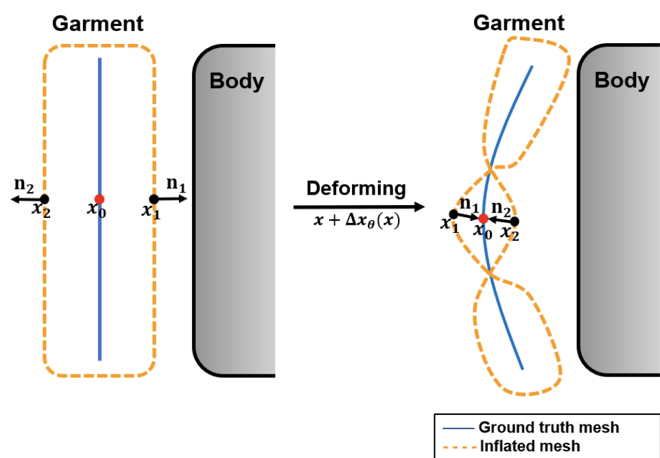

DIG: Draping Implicit Garment over the Human Body
Ren Li1, Benoit Guillard1, Edoardo Remelli2, Pascal Fua1
1 CvLab, EPFL 2 Meta Reality Labs Zürich
Abstract
Existing data-driven methods for draping garments over human bodies, despite being effective, cannot handle garments of arbitrary topology and are typically not end-to-end differentiable. To address these limitations, we propose an end-to-end differentiable pipeline that represents garments using implicit surfaces and learns a skinning field conditioned on shape and pose parameters of an articulated body model. To limit body-garment interpenetrations and artifacts, we propose an interpenetration-aware pre-processing strategy of training data and a novel training loss that penalizes self-intersections while draping garments. We demonstrate that our method yields more accurate results for garment reconstruction and deformation with respect to state of the art methods. Furthermore, we show that our method, thanks to its end-to-end differentiability, allows to recover body and garments parameters jointly from image observations, something that previous work could not do.Approach

A garment in the canonical space is first reconstructed with an SDF auto-decoder [DeepSDF] from its latent code z. Then, given the shape β and pose θ of the target body, we predict and add the shape and pose displacements (∆xβ and ∆xθ) to the reconstructed garment and drape it to the target body with the skinning function of [SMPL].
Garment Reconstruction
Reconstructing garments as the 0-levelset of an SDF network yields inflated shaped that have some thickness. To prevent inflated garments from penetrating inside the body, we introduce a new pre-processing stage of the training set. We simply push garments vertices that are within the body outside of it.
Left: standard inflated garment representation.
Right: with our pre-processing.

When deforming an inflated garment, such self intersections can happen. We add new loss terms to prevent them.
Garment Deformation
To drape garments on a body, we predict vertex displacements conditioned on shape and pose. We extend SMPL's template body skinning function to the entire 3D space.Our skinning weights and spatial deformations are learned with fully connected networks, from a dataset of simulated drapings [CLOTH3D]. New loss terms prevent self-intersections and collisions with the body.
The resulting skinning function can be queried for garments of any topology, and is fully differentiable.
Fitting images

Input Segmentation Reconstruction Side view Overlay
Our pipeline can be used to recover the body and garment shapes of clothed people from images. Since it is end-to-end differentiable, we can simply minimize a reprojection loss with respect to β, θ (body shape and pose), and z (garment latent code) by means of gradient descent. More specifically, given an input image, we first predict a segmentation mask and fit the output of our pipeline to it with a differentiable renderer.
BibTeX
If you find our work useful, please cite it as:@inproceedings{ren2022dig,
author = {Ren, Li and Guillard, Benoit and Remelli, Edoardo and Fua, Pascal},
title = {{DIG: Draping Implicit Garment over the Human Body}},
booktitle = {Asian Conference on Computer Vision},
year = {2022}
}
References
[DeepSDF]
J. J. Park, P. Florence, J. Straub, R. A. Newcombe, and S. Lovegrove. DeepSDF: Learning Continuous Signed Distance Functions for Shape Representation. In Conference on Computer Vision and Pattern Recognition, 2019.
[SMPL]
M. Loper, N. Mahmood, J. Romero, G. Pons-Moll, M. Black. SMPL: A skinned multi-person linear model. In ACM transactions on graphics (TOG), 2015.
[CLOTH3D]
H. Bertiche, M. Madadi, S. Escalera. CLOTH3D: Clothed 3D Humans. In: European Conference on Computer Vision, 2020.